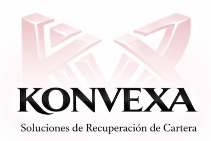

En Konvexa trabajamos con profesionalismo, seguimiento personalizado y estrategias efectivas para optimizar la recuperación de adeudos.
Evaluamos cada cuenta y situación para definir la mejor estrategia de recuperación.
Realizamos localización y comunicación profesional con seguimiento constante.
Buscamos acuerdos efectivos mediante soluciones adaptadas a cada caso.
Damos seguimiento a compromisos y gestionamos la recuperación de cartera.
Es el proceso de recuperación de adeudos sin necesidad de iniciar procedimientos judiciales.
Sí. Toda la información es tratada bajo estrictos principios de confidencialidad y profesionalismo.
Sí. Cada cuenta recibe atención específica y estrategias adaptadas a cada situación.
KONVEXA realiza únicamente procesos de cobranza extrajudicial bajo principios de respeto, confidencialidad y profesionalismo.
Lunes a Domingo
8:00 AM - 8:00 PM
Nuestro equipo está listo para brindarte atención y seguimiento profesional.
Solicitar Información